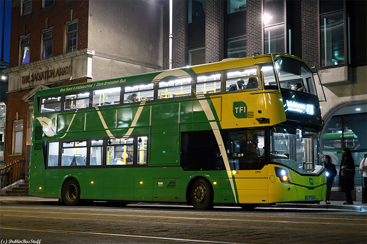
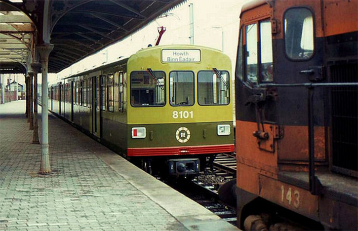
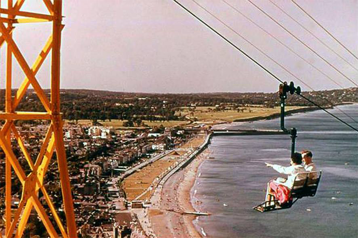

Bray Beach Festivals
Occurs during major events that happen on the beach

Bray Air Display
Thousands of people come to Bray to watch the air display every year

Bray Beach
Bray Head in the background
Occurs during major events that happen on the beach
Thousands of people come to Bray to watch the air display every year
Bray Head in the background
Every Good Friday, hundreds of local people climb to the top of the head in a Good Friday procession marking the stations of the Cross as they go along, with the final station being held at the holy year cross
Dublin Bus has a fleet of over 1,000 buses across 125 Routes accross Ireland and it had carried 145 million passengers in 2023
On 23 July 1984 the Dublin Area Rapid Transit (DART) began running between Bray in North county Wicklow and Howth in North county Dublin
Before package holidays, Bray, Co. Wicklow was the Blackpool of Ireland where holidaymakers came for the sea, the amusements and the "Roadshows"
St. Paul’s church was built in 1609 and is Bray’s oldest building. The graveyard appears to first have been put into use soon after the churches foundation in 1697